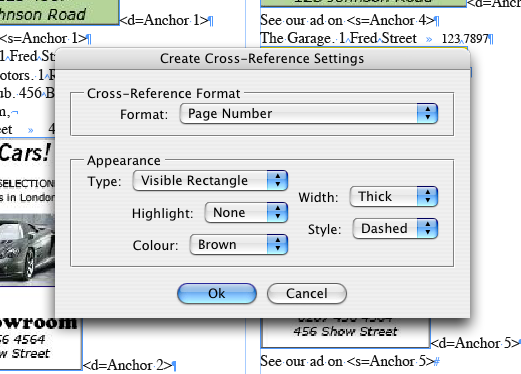

Create cross-references script
Script for InDesign CS4-5.

A script that creates cross-references from tags inserted into a text file. The tags can be inserted into the text, for example, while typing it, using a macros in Word, or by some date base software, like in the workflow, that the client, for whom I am writing this script, uses.
The text should contain two kinds of tags: <s=Anchor 123> for source, and the corresponding <d=Anchor 123> for destination, where s means source, d -- destination, Anchor — followed by a space and a number containing any number of digits — is name of the anchor and hyperlink.
For example you insert <s=Anchor 1> where the cross-reference's source should appear, and <d=Anchor 1> where its destination should be created. Then after placing the text, you run the script, choose settings and the script replaces the tags with cross-references.
To download this script click here.
Here is another incarnation of the script (the latest version) — called “Batch Create Cross-References” — I posted the sour se code so you could rework it you your needs.